Introduction to Python
 Maria Christina Maniou
Maria Christina Maniou Fotis E. Psomopoulos
Fotis E. PsomopoulosOverview
Questions:Objectives:
How can I run Python programs using Galaxy?
Requirements:
Learn the fundamentals of programming in Python
Use the scientific libraries pandas, numpy and matplolib to explore tabular datasets
Time estimation: 8 hoursLevel: Introductory IntroductorySupporting Materials:Last modification: Sep 8, 2021
 Questions:
Questions:
Introduction
Comment
This tutorial is significantly based on the Carpentries courses Programming with Python and Plotting and Programming in Python.
Overview
In this lesson, we will be using Python 3 with some of its most popular scientific libraries. We will be using JupyterNotebook, a Python interpreter that comes with everything we need for the lesson.
Python was developed by Guido van Rossum. Guido van Rossum started implementing Python in 1989. Python is a very simple programming language so even if you are new to programming, you can learn python without facing any issues.
Features of Python language:
-
Readable: Python is a very readable language.
-
Easy to Learn: Learning python is easy as this is a expressive and high level programming language, which means it is easy to understand the language and thus easy to learn.
-
Cross platform: Python is available and can run on various operating systems such as Mac, Windows, Linux, Unix etc. This makes it a cross platform and portable language.
-
Open Source: Python is a open source programming language.
-
Large standard library: Python comes with a large standard library that has some handy codes and functions which we can use while writing code in Python.
-
Free: Python is free to download and use. This means you can download it for free and use it in your application.
-
Supports exception handling: Python supports exception handling which means we can write less error prone code and can test various scenarios that can cause an exception later on.
-
Automatic memory management: Python supports automatic memory management which means the memory is cleared and freed automatically. You do not have to bother clearing the memory.
Launch Jupyter in Galaxy
JupyterLab is a User Interface including notebooks. A user can open several notebooks or files as tabs in the same window, like an IDE. JupyterNotebook is a web-based interactive computational environment for creating Jupyter notebook documents. It supports several languages like Python (IPython), Julia, R etc. and is largely used for data analysis, data visualization and further interactive, exploratory computing.
JupyterNotebook has several advantages:
- You can easily type, edit, and copy and paste blocks of code.
- Tab complete allows you to easily access the names of things you are using and learn more about them.
- It allows you to annotate your code with links, different sized text, bullets, etc. to make it more accessible to you and your collaborators.
- It allows you to display figures next to the code that produces them to tell a complete story of the analysis.
Each notebook contains one or more cells that contain code, text, or images. Each notebook can be exported (File, Export as, Executable script) as Python script that can be run from the command line.
We will be using JupyterNotebook in Galaxy and as a result you need to frequently save the notebook in the workspace. This is both for good practice and to protect you in case you accidentally close the browser. Your environment will still run, so it will contain the last saved notebook you have. Furthermore, you need to download a notebook, before you delete or close a notebook in your history or you will lose it.
Alternatively, you can download Anaconda, that includes JupyterNotebook, following the instructions of the Anaconda installation page for various operating systems.
Hands-on: Launching Jupyter and Creating a notebook
This section describes the steps to launch JupyterLab using Galaxy and is based on the corresponding part of the Trajectory Analysis using Python (Jupyter Notebook) in Galaxy course. Please note: this is only currently available on the usegalaxy.eu and usegalaxy.org sites.
- Type “Interactive Jupyter Notebook Tool” in the tools search bar.
- With the default parameters, press Execute. 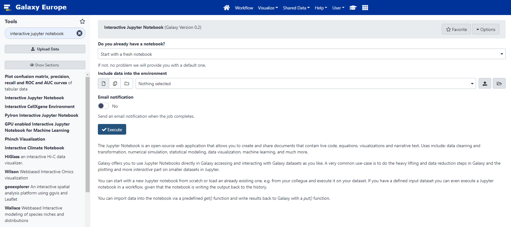
- Click on the blue User menu, or go to the top of the screen and choose User and then Active InteractiveTools.
- Click on the newest Jupyter Interactive Tool. This will launch the Jupyter Lab interface in a new Tab. 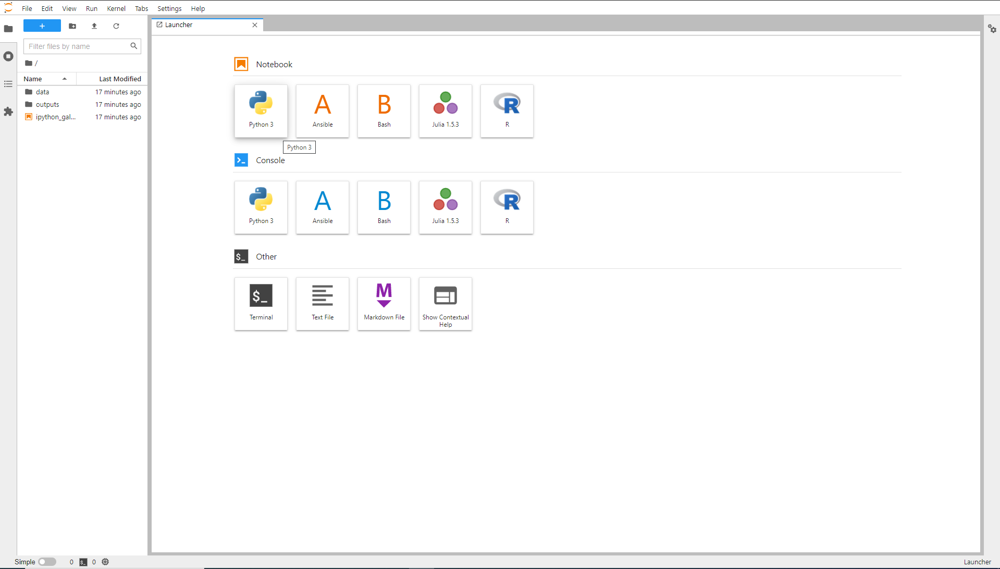
- Click on the Python3 icon under the Notebook section. 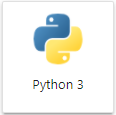
- A new jupyter notebook is ready and you can continue with the rest of this tutorial. 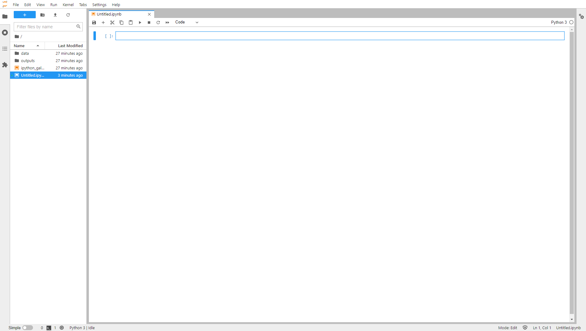
- Save your file (Click File, then Save, or click the Save icon at the top left).
- Click on the file in the folder window at the left and rename your file whateveryoulike.ipynb
Python Fundamentals
Variables
Any Python interpreter can be used as a calculator:
3 + 5 * 4
23
This is great but not very interesting. To do anything useful with data, we need to assign its value to a variable. In Python, we can assign a value to a variable, using the equals sign =. For example, we can track the weight of a patient who weighs 60 kilograms by assigning the value 60 to a variable weight_kg:
weight_kg = 60
From now on, whenever we use weight_kg, Python will substitute the value we assigned to it.
In Python, variable names:
- can include letters, digits, and underscores
- cannot start with a digit
- are case sensitive
This means that, for example:
weight0is a valid variable name, whereas0weightis notweightandWeightare different variables
Types of data
Python knows various types of data. Three common ones are:
- integer numbers
- floating point numbers, and
- strings.
In the example above, variable weight_kg has an integer value of 60. If we want to more precisely track the weight of our patient, we can use a floating point value by executing:
weight_kg = 60.3
To create a string, we add single or double quotes around some text. To identify and track a patient throughout our study, we can assign each person a unique identifier by storing it in a string:
patient_id = '001'
Using Variables in Python
Once we have data stored with variable names, we can make use of it in calculations. We may want to store our patient’s weight in pounds as well as kilograms:
weight_lb = 2.2 * weight_kg
We might decide to add a prefix to our patient identifier:
patient_id = 'inflam_' + patient_id
Variables Persist Between Cells
Be aware that it is the order of execution of cells that is important in a Jupyter notebook, not the order in which they appear. Python will remember all the code that was run previously, including any variables you have defined, irrespective of the order in the notebook. Therefore if you define variables lower down the notebook and then (re)run cells further up, those defined further down will still be present. As an example, create two cells with the following content, in this order:
print(myval)
myval = 1
If you execute this in order, the first cell will give an error. However, if you run the first cell after the second cell, it will print out 1. To prevent confusion, it can be helpful to use the Kernel -> Restart & Run All option which clears the interpreter and runs everything from a clean slate going top to bottom.
Exercises
-
What values do the variables
massandagehave after each of the following statements? Test your answer by executing the lines.mass = 47.5 age = 122 mass = mass * 2.0 age = age - 20 -
Python allows you to assign multiple values to multiple variables in one line by separating the variables and values with commas. What does the following program print out?
first, second = 'Grace', 'Hopper'
third, fourth = second, first
print(third, fourth)
-
What are the data types of the following variables?
planet = 'Earth' apples = 5 distance = 10.5
Solutions
-
`mass` holds a value of 47.5, `age` does not exist `mass` still holds a value of 47.5, `age` holds a value of 122 `mass` now has a value of 95.0, `age`'s value is still 122 `mass` still has a value of 95.0, `age` now holds 102 -
Hopper Grace -
type(planet) type(apples) type(distance)<class 'str'> <class 'int'> <class 'float'>
Lists
Lists are built into the language so we do not have to load a library to use them. We create a list by putting values inside square brackets and separating the values with commas:
odds = [1, 3, 5, 7]
print('odds are:', odds)
odds are: [1, 3, 5, 7]
We can access elements of a list using indices – numbered positions of elements in the list. These positions are numbered starting at 0, so the first element has an index of 0.
print('first element:', odds[0])
print('last element:', odds[3])
print('"-1" element:', odds[-1])
first element: 1
last element: 7
"-1" element: 7
Yes, we can use negative numbers as indices in Python. When we do so, the index -1 gives us the last element in the list, -2 the second to last, and so on. Because of this, odds[3] and odds[-1] point to the same element here.
There is one important difference between lists and strings: we can change the values in a list, but we cannot change individual characters in a string. For example:
names = ['Curie', 'Darwing', 'Turing'] # typo in Darwin's name
print('names is originally:', names)
names[1] = 'Darwin' # correct the name
print('final value of names:', names)
names is originally: ['Curie', 'Darwing', 'Turing']
final value of names: ['Curie', 'Darwin', 'Turing']
works, but the following does not:
name = 'Darwin'
name[0] = 'd'
Lists in Python can contain elements of different types. Example:
sample_ages = [10, 12.5, 'Unknown']
There are many ways to change the contents of lists besides assigning new values to individual elements:
odds.append(11)
print('odds after adding a value:', odds)
odds after adding a value: [1, 3, 5, 7, 11]
removed_element = odds.pop(0)
print('odds after removing the first element:', odds)
print('removed_element:', removed_element)
odds after removing the first element: [3, 5, 7, 11]
removed_element: 1
odds.reverse()
print('odds after reversing:', odds)
odds after reversing: [11, 7, 5, 3]
Mutable vs Immutable data
Data which can be modified in place is called mutable, while data which cannot be modified is called immutable. Strings and numbers are immutable. This does not mean that variables with string or number values are constants, but when we want to change the value of a string or number variable, we can only replace the old value with a completely new value.
Lists and arrays, on the other hand, are mutable: we can modify them after they have been created. We can change individual elements, append new elements, or reorder the whole list. For some operations, like sorting, we can choose whether to use a function that modifies the data in-place or a function that returns a modified copy and leaves the original unchanged.
Be careful when modifying data in-place. If two variables refer to the same list, and you modify the list value, it will change for both variables!
salsa = ['peppers', 'onions', 'cilantro', 'tomatoes']
my_salsa = salsa # <-- my_salsa and salsa point to the *same* list data in memory
salsa[0] = 'hot peppers'
print('Ingredients in my salsa:', my_salsa)
Ingredients in my salsa: ['hot peppers', 'onions', 'cilantro', 'tomatoes']
If you want variables with mutable values to be independent, you must make a copy of the value when you assign it.
salsa = ['peppers', 'onions', 'cilantro', 'tomatoes']
my_salsa = salsa.copy() # <-- makes a *copy* of the list
salsa[0] = 'hot peppers'
print('Ingredients in my salsa:', my_salsa)
Ingredients in my salsa: ['peppers', 'onions', 'cilantro', 'tomatoes']
Because of pitfalls like this, code which modifies data in place can be more difficult to understand. However, it is often far more efficient to modify a large data structure in place than to create a modified copy for every small change. You should consider both of these aspects when writing your code.
Nested lists
Since a list can contain any Python variables, it can even contain other lists.
For example, we could represent the products in the shelves of a small grocery shop:
x = [['pepper', 'zucchini', 'onion'],
['cabbage', 'lettuce', 'garlic'],
['apple', 'pear', 'banana']]
Here is an example of how indexing a list of lists x works:
print([x[0]])
[['pepper', 'zucchini', 'onion']]
print(x[0])
['pepper', 'zucchini', 'onion']
print(x[0][0])
'pepper'
Slicing
Subsets of lists can be accessed by specifying ranges of values in brackets. This is commonly referred to as “slicing” the list.
chromosomes = ['X', 'Y', '2', '3', '4']
autosomes = chromosomes[2:5]
print('autosomes:', autosomes)
last = chromosomes[-1]
print('last:', last)
autosomes: ['2', '3', '4']
last: 4
Exercises
- Use slicing to access only the last four characters of a string or entries of a list.
string_for_slicing = 'Observation date: 02-Feb-2013' list_for_slicing = [['fluorine', 'F'], ['chlorine', 'Cl'], ['bromine', 'Br'], ['iodine', 'I'], ['astatine', 'At']]'2013' [['chlorine', 'Cl'], ['bromine', 'Br'], ['iodine', 'I'], ['astatine', 'At']]Would your solution work regardless of whether you knew beforehand the length of the string or list (e.g. if you wanted to apply the solution to a set of lists of different lengths)? If not, try to change your approach to make it more robust.
Hint: Remember that indices can be negative as well as positive.
-
So far we’ve seen how to use slicing to take single blocks of successive entries from a sequence. But what if we want to take a subset of entries that aren’t next to each other in the sequence?
You can achieve this by providing a third argument to the range within the brackets, called the step size. The example below shows how you can take every third entry in a list:
primes = [2, 3, 5, 7, 11, 13, 17, 19, 23, 29, 31, 37] subset = primes[0:12:3] print('subset', subset)subset [2, 7, 17, 29]Notice that the slice taken begins with the first entry in the range, followed by entries taken at equally-spaced intervals (the steps) thereafter. What if you wanted to begin the subset with the third entry? Use the previous example to write your solution that gives the following output.
subset [5, 13, 23, 37]
Solutions
-
Use negative indices to count elements from the end of a container (such as list or string):
string_for_slicing[-4:] list_for_slicing[-4:] -
You would need to specify that as the starting point of the sliced range:
subset = primes[2:12:3] print('subset', subset)
Strings
Use an index to get a single character from a string.
The characters (individual letters, numbers,and so on) in a string are ordered. For example, the string ‘AB’ is not the same as ‘BA’. Because of this ordering, we can treat the string as a list of characters. Each position in the string (first, second, etc.) is given a number. This number is called an index or sometimes a subscript. Indices are numbered from 0.You can use the position’s index in square brackets to get the character at that position.
atom_name = 'helium'
print(atom_name[0])
h
Use a slice to get a substring.
A part of a string is called a substring. A substring can be as short as a single character. An item in a list is called an element. Whenever we treat a string as if it were a list, the string’s elements are its individual characters. A slice is a part of a string (or, more generally, any list-like thing). We take a slice by using [start:stop], where start is replaced with the index of the first element we want and stop is replaced with the index of the element just after the last element we want. Mathematically, you might say that a slice selects [start:stop). The difference between stop and start is the slice’s length. Taking a slice does not change the contents of the original string. Instead, the slice is a copy of part of the original string.
atom_name = 'sodium'
print(atom_name[0:3])
sod
You can use the built-in function len to find the length of a string.
print(len('helium'))
6
Nested functions are evaluated from the inside out, like in mathematics.
Exercises
- What does the following program print?
atom_name = 'carbon' print('atom_name[1:3] is:', atom_name[1:3]) - What does
thing[low:high]do? - What does
thing[low:](without a value after the colon) do? - What does
thing[:high](without a value before the colon) do? - What does
thing[:](just a colon) do? - What does
thing[number:some-negative-number]do? - What happens when you choose a high value which is out of range? (i.e., try
atom_name[0:15])
Solutions
-
atom_name[1:3] is: ar thing[low:high]returns a slice from low to the value before highthing[low:]returns a slice from low all the way to the end of thingthing[:high]returns a slice from the beginning of thing to the value before highthing[:]returns all of thingthing[number:some-negative-number]returns a slice from number to some-negative-number values from the end of thing- If a part of the slice is out of range, the operation does not fail.
atom_name[0:15]gives the same result asatom_name[0:].
You can use the “+” and “*” operators on strings/lists.
“Adding” character strings concatenates them.
full_name = 'Ahmed' + ' ' + 'Walsh'
print(full_name)
Ahmed Walsh
Multiplying a character string by an integer “N” creates a new string that consists of that character string repeated N times.
Since multiplication is repeated addition.
separator = '=' * 10
print(separator)
==========
The same rules apply for lists. Consider the following example:
counts = [2, 4, 6, 8, 10]
repeats = counts * 2
print(repeats)
[2, 4, 6, 8, 10, 2, 4, 6, 8, 10]
It’s equivalent to:
counts + counts
Strings have a length (but numbers don’t).The built-in function len counts the number of characters in a string.
print(len(full_name))
11
But numbers don’t have a length (not even zero). For example, the following command returns an error message.
print(len(52))
Type conversion
Python converts automatically integers to floats, when needed, but you must convert numbers to strings or vice versa when operating on them.
It is not allowed to add numbers and strings. For example print(1 + '2') is ambiguous: should 1 + '2' be 3 or '12'?
Some types can be converted to other types by using the type name as a function.
print(1 + int('2'))
print(str(1) + '2')
3
12
Exercises
-
What type of value is 3.25 + 4?
-
In Python 3, the
//operator performs integer (whole-number) floor division, the/operator performs floating-point division, and the%(or modulo) operator calculates and returns the remainder from integer division:print('5 // 3:', 5 // 3) print('5 / 3:', 5 / 3) print('5 % 3:', 5 % 3)5 // 3: 1 5 / 3: 1.6666666666666667 5 % 3: 2If
num_subjectsis the number of subjects taking part in a study, andnum_per_surveyis the number that can take part in a single survey, write an expression that calculates the number of surveys needed to reach everyone once. - Where reasonable,
float()will convert a string to a floating point number, andint()will convert a floating point number to an integer:print("string to float:", float("3.4")) print("float to int:", int(3.4))string to float: 3.4 float to int: 3If the conversion doesn’t make sense, however, an error message will occur. Given this information, what do you expect the following program to do?
What does it actually do?
Why do you think it does that?
print("fractional string to int:", int("3.4")) -
Which of the following will return the floating point number
2.0? Note: there may be more than one right answer.first = 1.0 second = "1" third = "1.1"first + float(second)float(second) + float(third)first + int(third)first + int(float(third))int(first) + int(float(third))2.0 * second
-
Python provides complex numbers, which are written as
1.0+2.0j. Ifvalis a complex number, its real and imaginary parts can be accessed using dot notation asval.realandval.imag.complex = 6 + 2j print(complex.real) print(complex.imag)6.0 2.0- Why do you think Python uses
jinstead of i for the imaginary part? - What do you expect
1+2j + 3to produce? - What do you expect
4jto be? What about4 jor4 + j?
- Why do you think Python uses
Solutions
-
It is a float: integers are automatically converted to floats as necessary.
-
We want the minimum number of surveys that reaches everyone once, which is the rounded up value of
num_subjects/ num_per_survey. This is equivalent to performing a floor division with//and adding 1. Before the division we need to subtract 1 from the number of subjects to deal with the case wherenum_subjectsis evenly divisible bynum_per_survey.num_subjects = 600 num_per_survey = 42 num_surveys = (num_subjects - 1) // num_per_survey + 1 print(num_subjects, 'subjects,', num_per_survey, 'per survey:', num_surveys)600 subjects, 42 per survey: 15 -
Python 3 throws an error. If you ask Python to perform two consecutive typecasts, you must convert it explicitly in code.
int(float("3.4"))3 - Answer: 1 and 4
-
- Standard mathematics treatments typically use i to denote an imaginary number. However, from media reports it was an early convention established from electrical engineering that now presents a technically expensive area to change.
(4+2j)4jand Syntax Error: invalid syntax. In the latter cases,jis considered a variable and the statement depends on ifjis defined and if so, its assigned value.
Built-in Python functions
To carry out common tasks with data and variables in Python, the language provides us with several built-in functions. To display information to the screen, we use the print function:
print(weight_lb)
print(patient_id)
132.66
inflam_001
When we want to make use of a function, referred to as calling the function, we follow its name by parentheses. The parentheses are important: if you leave them off, the function doesn’t actually run! Sometimes you will include values or variables inside the parentheses for the function to use. In the case of print, we use the parentheses to tell the function what value we want to display. print automatically puts a single space between outputs to separate them and wraps around to a new line at the end.
We can display multiple things at once using only one print call:
print(patient_id, 'weight in kilograms:', weight_kg)
inflam_001 weight in kilograms: 60.3
We can also call a function inside of another function call. For example, Python has a built-in function called type that tells you a value’s data type:
print(type(60.3))
print(type(patient_id))
<class 'float'>
<class 'str'>
Moreover, we can do arithmetic with variables right inside the print function:
print('weight in pounds:', 2.2 * weight_kg)
weight in pounds: 132.66
The above command, however, did not change the value of weight_kg:
print(weight_kg)
60.3
To change the value of the weight_kg variable, we have to assign weight_kg a new value using the equals = sign:
weight_kg = 65.0
print('weight in kilograms is now:', weight_kg)
weight in kilograms is now: 65.0
A function may take zero or more arguments. An argument is a value passed into a function. You must always use parentheses, even if they’re empty, so that Python knows a function is being called.
Every function call produces some result. If the function doesn’t have a useful result to return, it usually returns the special value None. None is a Python object that stands in anytime there is no value.
result = print('example')
print('result of print is', result)
example
result of print is None
Commonly-used built-in functions include max, min, and round. max and min work on character strings as well as numbers. From “larger” and “smaller”, they use the order: (0-9, A-Z, a-z) to compare letters.
print(max(1, 2, 3))
print(min('a', 'A', '0'))
3
0
Functions may have default values for some arguments. round will round off a floating-point number. By default, it rounds to zero decimal places.
round(3.712)
4
We can specify the number of decimal places we want.
round(3.712, 1)
3.7
Functions attached to objects are called methods
Methods have parentheses like functions, but come after the variable. Some methods are used for internal Python operations, and are marked with double underlines.
my_string = 'Hello world!' # creation of a string object
print(len(my_string)) # the len function takes a string as an argument and returns the length of the string
print(my_string.swapcase()) # calling the swapcase method on the my_string object
print(my_string.__len__()) # calling the internal __len__ method on the my_string object, used by len(my_string)
12
hELLO WORLD!
12
You might even see them chained together. They operate left to right.
print(my_string.isupper()) # Not all the letters are uppercase
print(my_string.upper()) # This capitalizes all the letters
print(my_string.upper().isupper()) # Now all the letters are uppercase
False
HELLO WORLD
True
Use the built-in function help to get help for a function.
Every built-in function has online documentation.
help(round)
Help on built-in function round in module builtins:
round(number, ndigits=None)
Round a number to a given precision in decimal digits.
The return value is an integer if ndigits is omitted or None. Otherwise
the return value has the same type as the number. ndigits may be negative.
Conditionals
An if statement (more properly called a conditional statement) controls whether some block of code is executed or not. The first line opens with if and ends with a colon and the block of code to be executed is indented. An example is showed below.
num = 37
if num > 100:
print('greater')
else:
print('not greater')
print('done')
not greater
done
If the expression that follows the if statement is true, the body of the if (i.e., the set of lines indented underneath it) is executed, and “greater” is printed. If it is false, the body of the else is executed instead, and “not greater” is printed. Only one or the other is ever executed before continuing on with program execution to print “done”:

Conditional statements don’t have to include an else. If there isn’t one, Python simply does nothing if the expression is false:
num = 53
print('before conditional...')
if num > 100:
print(num, 'is greater than 100')
print('...after conditional')
before conditional...
...after conditional
We can also chain several expressions together using elif, which is short for “else if”. The following Python code uses elif to print the sign of a number.
num = -3
if num > 0:
print(num, 'is positive')
elif num == 0:
print(num, 'is zero')
else:
print(num, 'is negative')
-3 is negative
Comparison operators in Python
The operators used for comparing values in conditionals are the following:
>: greater than<: less than==: equal to!=: does not equal>=: greater than or equal to<=: less than or equal to
Logical operators in Python
We can also combine expressions using and and or. and is only true if both parts are true:
if (1 > 0) and (-1 >= 0):
print('both parts are true')
else:
print('at least one part is false')
at least one part is false
while or is true if at least one part is true:
if (1 < 0) or (1 >= 0):
print('at least one test is true')
at least one test is true
True and False
True and False are special words in Python called booleans, which represent truth values. A statement such as 1 < 0 returns the value False, while -1 < 0 returns the value True.
Exercises
-
What does this program print?
pressure = 71.9 if pressure > 50.0: pressure = 25.0 elif pressure <= 50.0: pressure = 0.0 print(pressure) -
Write some conditions that print
Trueif the variableais within 10% of the variablebandFalseotherwise. Compare your implementation with your partner’s: do you get the same answer for all possible pairs of numbers?Hint: There is a built-in function
abs()that returns the absolute value of a number.
Solutions
-
25 -
a = 5 b = 5.1 if abs(a - b) <= 0.1 * abs(b): print('True') else: print('False')
For loops
Doing calculations on the values in a list one by one is very time consuming.
odds = [1, 3, 5, 7, 9, 11]
print(odds[0])
print(odds[1])
print(odds[2])
print(odds[3])
print(odds[4])
print(odds[5])
1
3
5
7
9
11
A for loop tells Python to execute some statements once for each value in a list, a character string, or some other collection. “for each thing in this group, do these operations”. The for loop equivalent to the previous code is:
for num in odds:
print(num)
The improved version uses a for loop to repeat an operation — in this case, printing — once for each thing in a sequence. The general form of a loop is:
for variable in collection:
# do things using variable, such as print
Using the odds example above, the loop might look like this:

where each number (num) in the variable odds is looped through and printed one number after another. The other numbers in the diagram denote which loop cycle the number was printed in (1 being the first loop cycle, and 6 being the final loop cycle).
We can call the loop variable anything we like, but there must be a colon at the end of the line starting the loop, and we must indent anything we want to run inside the loop. Unlike many other languages, there is no command to signify the end of the loop body (e.g. end for); what is indented after the for statement belongs to the loop. Python uses indentation to show nesting. Any consistent indentation is legal, but almost everyone uses four spaces.
When looping through a list, the position index and corresponding value can be retrieved at the same time using the enumerate() function.
for i, v in enumerate(['tic', 'tac', 'toe']):
... print(i, v)
0 tic
1 tac
2 toe
To loop over two or more lists at the same time, the entries can be paired with the zip() function.
questions = ['name', 'quest', 'favorite color']
answers = ['lancelot', 'the holy grail', 'blue']
for q, a in zip(questions, answers):
print('What is your {0}? It is {1}.'.format(q, a))
What is your name? It is lancelot.
What is your quest? It is the holy grail.
What is your favorite color? It is blue.
We can choose any name we want for variables. It is a good idea to choose variable names that are meaningful, otherwise it would be more difficult to understand what the loop is doing.
Here’s another loop that repeatedly updates a variable:
length = 0
names = ['Curie', 'Darwin', 'Turing']
for value in names:
length = length + 1
print('There are', length, 'names in the list.')
print('After the loop, name is', name)
There are 3 names in the list.
After the loop, name is Turing
It is worth tracing the execution of this little program step by step. Since there are three names in names, the statement on line 4 will be executed three times. The first time around, length is 0 (the value assigned to it on line 1) and value is Curie. The statement adds 1 to the old value of length, producing 1, and updates length to refer to that new value. The next time around, value is Darwin and length is 1, so length is updated to be 2. After one more update, length is 3; since there is nothing left in names for Python to process, the loop finishes and the print function on line 5 tells us our final answer.
Note that a loop variable is a variable that is being used to record progress in a loop. It still exists after the loop is over, stores the value assigned to it last, and we can re-use variables previously defined as loop variables as well.
Exercises
-
Python has a built-in function called
range()that generates a sequence of numbers.rangecan accept 1, 2, or 3 parameters.If one parameter is given,
rangegenerates a sequence of that length, starting at zero and incrementing by 1. For example,range(3)produces the numbers0, 1, 2. If two parameters are given,rangestarts at the first and ends just before the second, incrementing by one. For example,range(2, 5)produces2, 3, 4. Ifrangeis given 3 parameters, it starts at the first one, ends just before the second one, and increments by the third one. For example,range(3, 10, 2)produces3, 5, 7, 9. Usingrange, write a loop that usesrangeto print the first 3 natural numbers:1 2 3 -
Given the following loop:
word = 'oxygen' for char in word: print(char) -
Exponentiation is built into Python:
print(5 ** 3)125Write a loop that calculates the same result as
5 ** 3using multiplication (and without exponentiation). How many times is the body of the loop executed? -
Write a loop that calculates the sum of elements in a list by adding each element and printing the final value, so
[124, 402, 36]prints562 -
Suppose you have encoded a polynomial as a list of coefficients in the following way: the first element is the constant term, the second element is the coefficient of the linear term, the third is the coefficient of the quadratic term, etc.
x = 5 coefs = [2, 4, 3] y = coefs[0] * x**0 + coefs[1] * x**1 + coefs[2] * x**2 print(y)97Write a loop using
enumerate(coefs)which computes the valueyof any polynomial, givenxandcoefs. -
Fill in the blanks so that this program creates a new list containing zeroes where the original list’s values were negative and ones where the original list’s values were positive.
original = [-1.5, 0.2, 0.4, 0.0, -1.3, 0.4] result = ____ for value in original: if ____: result.append(0) else: ____ print(result)[0, 1, 1, 1, 0, 1]
Solutions
-
python for i in range(1, 4): print(i) -
The body of the loop is executed 6 times.
-
result = 1 for number in range(0, 3): result = result * 5 print(result) -
numbers = [124, 402, 36] summed = 0 for num in numbers: summed = summed + num print(summed) -
y = 0 for idx, coef in enumerate(coefs): y = y + coef * x**idx -
original = [-1.5, 0.2, 0.4, 0.0, -1.3, 0.4] result = [] for value in original: if value < 0: result.append(0) else: result.append(1) print(result)
While loops
With the while loop we can execute a set of statements as long as an expression is true. The following example prints i as long as i is less than 6:
odds = [1, 3, 5, 7, 9, 11]
i = 0
while odds[i] < 6:
print(odds[i])
i = i + 1
1
3
5
Remember to increment i, or else the loop will continue forever. The while loop requires relevant variables to be ready, in this example we need to define an indexing variable, i, which we set to 0.
With the break statement we can stop the loop even if the while condition is true:
odds = [1, 3, 5, 7, 9, 11]
i = 0
while odds[i] < 6:
print(odds[i])
if odds[i] == 3:
break
i = i + 1
1
3
With the continue statement we can stop the current iteration, and continue with the next:
odds = [1, 3, 5, 7, 9, 11]
i = 0
while odds[i] < 6:
i = i + 1
if odds[i] == 3:
continue
print(odds[i])
5
7
With the else statement we can run a block of code once when the condition no longer is true:
odds = [1, 3, 5, 7, 9, 11]
i = 0
while odds[i] < 6:
print(odds[i])
i = i + 1
else:
print("condition is no longer True")
1
3
5
condition is no longer True
Create Functions
Human beings can only keep a few items in working memory at a time. Breaking down larger/more complicated pieces of code in functions helps in understanding and using it. A function can be re-used. Write one time, use many times.
def fahr_to_celsius(temp):
return ((temp - 32) * (5/9))
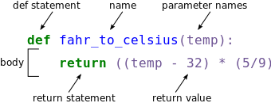
The function definition opens with the keyword def followed by the name of the function fahr_to_celsius and a parenthesized list of parameter names temp. The body of the function — the statements that are executed when it runs — is indented below the definition line. The body concludes with a return keyword followed by the return value.
When we call the function, the values we pass to it are assigned to those variables so that we can use them inside the function. Inside the function, we use a return statement to send a result back to whoever asked for it.
Let’s try running our function.
fahr_to_celsius(32)
print('freezing point of water:', fahr_to_celsius(32), 'C')
print('boiling point of water:', fahr_to_celsius(212), 'C')
freezing point of water: 0.0 C
boiling point of water: 100.0 C
We’ve successfully called the function that we defined, and we have access to the value that we returned.
Now that we’ve seen how to turn Fahrenheit into Celsius, we can also write the function to turn Celsius into Kelvin:
def celsius_to_kelvin(temp_c):
return temp_c + 273.15
print('freezing point of water in Kelvin:', celsius_to_kelvin(0.))
freezing point of water in Kelvin: 273.15
What about converting Fahrenheit to Kelvin? We could write out the formula, but we don’t need to. Instead, we can compose the two functions we have already created:
def fahr_to_kelvin(temp_f):
temp_c = fahr_to_celsius(temp_f)
temp_k = celsius_to_kelvin(temp_c)
return temp_k
print('boiling point of water in Kelvin:', fahr_to_kelvin(212.0))
boiling point of water in Kelvin: 373.15
This is our first taste of how larger programs are built: we define basic operations, then combine them in ever-larger chunks to get the effect we want. Real-life functions will usually be larger than the ones shown here — typically half a dozen to a few dozen lines — but they shouldn’t ever be much longer than that, or the next person who reads it won’t be able to understand what’s going on.
Variable Scope
In composing our temperature conversion functions, we created variables inside of those functions, temp, temp_c, temp_f, and temp_k. We refer to these variables as local variables because they no longer exist once the function is done executing. If we try to access their values outside of the function, we will encounter an error:
print('Again, temperature in Kelvin was:', temp_k)
If you want to reuse the temperature in Kelvin after you have calculated it with fahr_to_kelvin, you can store the result of the function call in a variable:
temp_kelvin = fahr_to_kelvin(212.0)
print('temperature in Kelvin was:', temp_kelvin)
temperature in Kelvin was: 373.15
Defining Default parameters
If we usually want a function to work one way, but occasionally need it to do something else, we can allow people to pass a parameter when they need to but provide a default to make the normal case easier. The example below shows how Python matches values to parameters:
def display(a=1, b=2, c=3):
print('a:', a, 'b:', b, 'c:', c)
print('no parameters:')
display()
print('one parameter:')
display(55)
print('two parameters:')
display(55, 66)
no parameters:
a: 1 b: 2 c: 3
one parameter:
a: 55 b: 2 c: 3
two parameters:
a: 55 b: 66 c: 3
As this example shows, parameters are matched up from left to right, and any that haven’t been given a value explicitly get their default value. We can override this behavior by naming the value as we pass it in:
print('only setting the value of c')
display(c=77)
only setting the value of c
a: 1 b: 2 c: 77
Exercises
-
What does the following piece of code display when run — and why?
f = 0 k = 0 def f2k(f): k = ((f - 32) * (5.0 / 9.0)) + 273.15 return k print(f2k(8)) print(f2k(41)) print(f2k(32)) print(k)
Solutions
-
259.81666666666666 278.15 273.15 0kis 0 because thekinside the functionf2kdoesn’t know about thekdefined outside the function. When thef2kfunction is called, it creates a local variablek. The function does not return any values and does not alterkoutside of its local copy. Therefore the original value ofkremains unchanged.
Libraries
A library is a collection of files (called modules) that contains functions for use by other programs. It may also contain data values (e.g., numerical constants) and other things. A library’s contents are supposed to be related, but there’s no way to enforce that. The Python standard library is an extensive suite of modules that comes with Python itself. Many additional libraries are available from PyPI (the Python Package Index).
Libraries and modules
A library is a collection of modules, but the terms are often used interchangeably, especially since many libraries only consist of a single module, so don’t worry if you mix them.
A program must import a library module before using it.
You can use import to load a library module into a program’s memory, then refer to things from the module as module_name.thing_name. Python uses . to mean “part of”. For example, using math, one of the modules in the standard library:
import math
print('pi is', math.pi)
print('cos(pi) is', math.cos(math.pi))
pi is 3.141592653589793
cos(pi) is -1.0
You can use help to learn about the contents of a library module. it works just like help for a function.
help(math)
You can import specific items from a library module to shorten programs. You can use from ... import ... to load only specific items from a library module. Then refer to them directly without library name as prefix.
from math import cos, pi
print('cos(pi) is', cos(pi))
cos(pi) is -1.0
You can create an alias for a library module when importing it to shorten programs. Use import ... as ... to give a library a short alias while importing it. Then refer to items in the library using that shortened name.
import math as m
print('cos(pi) is', m.cos(m.pi))
cos(pi) is -1.0
Analyze data using numpy
NumPy is a python library and it stands for Numerical Python. In general, you should use this library when you want to perform operations and manipulate numerical data, especially if you have matrices or arrays. To tell Python that we’d like to start using NumPy, we need to import it:
import numpy as np
A Numpy array contains one or more elements of the same type. To examine the basic functions of the library, we will create an array of random data. These data will correspond to arthritis patients’ inflammation. The rows are the individual patients, and the columns are their daily inflammation measurements. We will use the random.randint() function. It has 4 arguments as inputs randint(low, high=None, size=None, dtype=int). low nad high specify the limits of the random number generator. size determines the shape of the array and it can be an integer or a tuple.
np.random.seed(2021) #create reproducible work
random_data = np.random.randint(1, 25, size=(50,70))
If we want to check the data have been loaded, we can print the variable’s value:
print(random_data)
[[21 22 1 ... 8 21 12]
[20 19 15 ... 5 10 7]
[ 7 24 14 ... 24 19 12]
...
[22 16 3 ... 2 18 21]
[22 14 23 ... 7 13 4]
[ 7 7 8 ... 15 8 9]]
Now that the data are in memory, we can manipulate them. First, let’s ask what type of thing data refers to:
print(type(random_data))
<class 'numpy.ndarray'>
The output tells us that data currently refers to an N-dimensional array, the functionality for which is provided by the NumPy library. These data correspond to arthritis patients’ inflammation. The rows are the individual patients, and the columns are their daily inflammation measurements.
The type function will only tell you that a variable is a NumPy array but won’t tell you the type of thing inside the array. We can find out the type of the data contained in the NumPy array.
print(random_data.dtype)
int64
This tells us that the NumPy array’s elements are integer numbers.
With the following command, we can see the array’s shape:
print(random_data.shape)
(50, 70)
The output tells us that the data array variable contains 50 rows and 70 columns. When we created the variable random_data to store our arthritis data, we did not only create the array; we also created information about the array, called members or attributes. This extra information describes random_data in the same way an adjective describes a noun. random_data.shape is an attribute of random_data which describes the dimensions of random_data.
If we want to get a single number from the array, we must provide an index in square brackets after the variable name, just as we do in math when referring to an element of a matrix. Our data has two dimensions, so we will need to use two indices to refer to one specific value:
print('first value in data:', random_data[0, 0])
first value in data: 21
print('middle value in data:', random_data[25, 35])
middle value in data: 11
The expression random_data[25, 35] accesses the element at row 25, column 35. While this expression may not surprise you, random_data[0, 0] might. Programming languages like Fortran, MATLAB and R start counting at 1 because that’s what human beings have done for thousands of years. Languages in the C family (including C++, Java, Perl, and Python) count from 0 because it represents an offset from the first value in the array (the second value is offset by one index from the first value). As a result, if we have an M×N array in Python, its indices go from 0 to M-1 on the first axis and 0 to N-1 on the second.
Slicing data An index like [25, 35] selects a single element of an array, but we can select whole sections as well, using slicing the same way as previously with the strings. For example, we can select the first ten days (columns) of values for the first four patients (rows) like this:
print(random_data[0:4, 0:10])
[[21 22 1 14 23 13 22 13 23 7]
[20 19 15 19 22 19 1 21 24 4]
[ 7 24 14 11 5 6 3 4 3 17]
[24 9 4 17 10 4 11 4 13 20]]
We don’t have to include the upper and lower bound on the slice. If we don’t include the lower bound, Python uses 0 by default; if we don’t include the upper, the slice runs to the end of the axis, and if we don’t include either (i.e., if we use ‘:’ on its own), the slice includes everything:
small = random_data[:3, 36:]
print('small is:')
print(small)
small is:
[[22 23 19 11 5 14 11 20 19 16 9 11 13 22 12 20 2 15 18 19 8 22 20 13
24 20 10 5 10 8 8 8 21 12]
[ 7 15 12 10 20 2 12 20 16 7 18 12 1 6 12 17 24 1 18 4 7 13 12 21
8 10 5 2 8 18 16 5 10 7]
[23 23 8 5 20 14 3 9 17 13 22 9 2 11 14 23 7 20 8 22 5 21 20 2
11 4 24 19 2 14 22 24 19 12]]
The above example selects rows 0 through 2 and columns 36 through to the end of the array.
Process the data
NumPy has several useful functions that take an array as input to perform operations on its values. If we want to find the average inflammation for all patients on all days, for example, we can ask NumPy to compute random_data’s mean value:
print(np.mean(random_data))
12.567142857142857
Let’s use three other NumPy functions to get some descriptive values about the dataset. We’ll also use multiple assignment, a convenient Python feature that will enable us to do this all in one line.
maxval, minval, stdval = np.max(random_data), np.min(random_data), np.std(random_data)
print('maximum inflammation:', maxval)
print('minimum inflammation:', minval)
print('standard deviation:', stdval)
maximum inflammation: 24
minimum inflammation: 1
standard deviation: 6.966639309258527
How did we know what functions NumPy has and how to use them? If you are working in IPython or in a Jupyter Notebook, there is an easy way to find out. If you type the name of something followed by a dot, then you can use tab completion (e.g. type np. and then press Tab) to see a list of all functions and attributes that you can use. After selecting one, you can also add a question mark (e.g. np.cumprod?), and IPython will return an explanation of the method! This is the same as doing help(np.cumprod).
When analyzing data, though, we often want to look at variations in statistical values, such as the maximum inflammation per patient or the average inflammation per day. One way to do this is to create a new temporary array of the data we want, then ask it to do the calculation:
patient_0 = random_data[0, :] # 0 on the first axis (rows), everything on the second (columns)
print('maximum inflammation for patient 0:', np.max(patient_0))
maximum inflammation for patient 0: 24
What if we need the maximum inflammation for each patient over all days (as in the next diagram on the left) or the average for each day (as in the diagram on the right)? As the diagram below shows, we want to perform the operation across an axis:

To support this functionality, most array functions allow us to specify the axis we want to work on. If we ask for the average across axis 0 (rows in our 2D example), we get:
print(np.mean(random_data, axis=0))
[12.9 13.4 12.66 12.54 12.76 12.22 10.84 12.32 12.56 13.5 11.36 14.62
12.18 13.02 13.3 10.6 11.36 10.26 10.22 13.14 14.12 12.5 12.3 12.78
12.4 12.08 13.42 12.64 11.5 12.08 14.28 13.2 12.48 13.4 12.54 13.84
12.88 13.74 10.88 11.38 11.7 11.7 12.62 13.8 14.02 12.92 12.98 12.5
11.52 13.96 11.98 14.5 12.16 11.04 13.96 12.48 11.98 12.32 12.2 13.88
10.96 13.44 12.26 12.98 11.46 12.52 13.9 13. 12.4 12.36]
As a quick check, we can ask this array what its shape is:
print(np.mean(random_data, axis=0).shape)
(70,)
The expression (70,) tells us we have an N×1 vector, so this is the average inflammation per day for all patients. If we average across axis 1 (columns in our 2D example), we get the average inflammation per patient across all days.:
print(np.mean(random_data, axis=1))
[13.28571429 12.37142857 13.31428571 12.21428571 14.24285714 13.58571429
11.55714286 13.02857143 12.44285714 12.37142857 13.15714286 12.32857143
11.37142857 11.94285714 12.37142857 11.81428571 12.48571429 12.47142857
13.14285714 13.05714286 12.4 13.7 13.28571429 13.01428571
12.8 12.05714286 11.57142857 12.25714286 12.62857143 12.12857143
13.94285714 11.88571429 12.02857143 12.98571429 12.15714286 12.24285714
12.48571429 13.87142857 12.27142857 13.77142857 12.04285714 12.34285714
13.58571429 13.04285714 12.28571429 11.35714286 10.3 12.72857143
11.81428571 12.81428571]
Stacking arrays
Arrays can be concatenated and stacked on top of one another, using NumPy’s vstack and hstack functions for vertical and horizontal stacking, respectively.
import numpy as np
A = np.array([[1,2,3], [4,5,6], [7, 8, 9]])
print('A = ')
print(A)
B = np.hstack([A, A])
print('B = ')
print(B)
C = np.vstack([A, A])
print('C = ')
print(C)
A =
[[1 2 3]
[4 5 6]
[7 8 9]]
B =
[[1 2 3 1 2 3]
[4 5 6 4 5 6]
[7 8 9 7 8 9]]
C =
[[1 2 3]
[4 5 6]
[7 8 9]
[1 2 3]
[4 5 6]
[7 8 9]]
Remove NaN values
Sometimes there are missing values in an array, that could make it difficult to perform operations on it. To remove the NaN you must first find their indexes and then replace them. The following example replaces them with 0.
a = array([[1, 2, 3], [0, 3, NaN]])
print(a)
a[np.isnan(a)] = 0
print(a)
[[ 1. 2. 3.]
[ 0. 3. nan]]
[[1. 2. 3.]
[0. 3. 0.]]
### Exercises
-
Write some additional code that slices the first and last columns of A, and stacks them into a 3x2 array. Make sure to print the results to verify your solution.
-
Given the followind array
A, keep only the elements that are lower that0.05.A = np.array([0.81, 0.025, 0.15, 0.67, 0.01])
### Solutions
-
A ‘gotcha’ with array indexing is that singleton dimensions are dropped by default. That means
A[:, 0]is a one dimensional array, which won’t stack as desired. To preserve singleton dimensions, the index itself can be a slice or array. For example,A[:, :1]returns a two dimensional array with one singleton dimension (i.e. a column vector).D = np.hstack((A[:, :1], A[:, -1:])) print('D = ') print(D)D = [[1 3] [4 6] [7 9]] -
A = A[A<0.05]
Use pandas to work with dataframes
Pandas is a widely-used Python library for statistics, particularly on tabular data. If you are familiar with R dataframes, then this is the library that integrates this functionality. A dataframe is a 2-dimensional table with indexes and column names. The indexes indicate the difference in rows, while the column names indicate the difference in columns. You will see later that these two features are useful when you’re manipulating your data. Each column can contain different data types.
Load it with import pandas as pd. The alias pd is commonly used for pandas.
import pandas as pd
There are many ways to create a pandas dataframe. For example you can use a numpy array as input.
data = np.array([['','Col1','Col2'],
['Row1',1,2],
['Row2',3,4]])
print(pd.DataFrame(data=data[1:,1:],
index=data[1:,0],
columns=data[0,1:]))
Col1 Col2
Row1 1 2
Row2 3 4
For the purposes of this tutorial, we will use a file with the annotated differentially expressed genes that was produced in the Reference-based RNA-Seq data analysis tutorial.
We can read a tabular file with pd.read_csv. The first argument is the filepath of the file to be read. The sep argument refers to the symbol used to separate the data into different columns. You can check the rest of the arguments using the help() function.
data = pd.read_csv("https://zenodo.org/record/3477564/files/annotatedDEgenes.tabular", sep = "\t")
print(data)
GeneID Base mean log2(FC) StdErr Wald-Stats P-value \
0 FBgn0039155 1086.974295 -4.148450 0.134949 -30.740913 1.617357e-207
1 FBgn0003360 6409.577128 -2.999777 0.104345 -28.748637 9.419922e-182
2 FBgn0026562 65114.840564 -2.380164 0.084327 -28.225437 2.850430e-175
3 FBgn0025111 2192.322369 2.699939 0.097945 27.565978 2.847517e-167
4 FBgn0029167 5430.067277 -2.105062 0.092547 -22.745964 1.573284e-114
.. ... ... ... ... ... ...
125 FBgn0035710 26.161771 1.048979 0.232922 4.503559 6.682473e-06
126 FBgn0035523 70.998197 1.004819 0.223763 4.490561 7.103599e-06
127 FBgn0038261 44.270577 1.006264 0.224124 4.489756 7.130487e-06
128 FBgn0039178 23.550056 1.040917 0.232626 4.474631 7.654328e-06
129 FBgn0034636 24.770519 -1.028531 0.232168 -4.430118 9.418135e-06
P-adj Chromosome Start End Strand Feature \
0 1.387207e-203 chr3R 24141394 24147490 + protein_coding
1 4.039734e-178 chrX 10780892 10786958 - protein_coding
2 8.149380e-172 chr3R 26869237 26871995 - protein_coding
3 6.105789e-164 chrX 10778953 10786907 - protein_coding
4 2.698811e-111 chr3L 13846053 13860001 + protein_coding
.. ... ... ... ... ... ...
125 1.436480e-04 chr3L 6689326 6703521 - protein_coding
126 1.523189e-04 chr3L 4277961 4281585 + protein_coding
127 1.525142e-04 chr3R 14798985 14801163 + protein_coding
128 1.629061e-04 chr3R 24283954 24288617 + protein_coding
129 1.951192e-04 chr2R 21560245 21576035 - protein_coding
Gene name
0 Kal1
1 sesB
2 BM-40-SPARC
3 Ant2
4 Hml
.. ...
125 SP1173
126 CG1311
127 CG14856
128 CG6356
129 CG10440
[130 rows x 13 columns]
The columns in a dataframe are the observed variables, and the rows are the observations. Pandas uses backslash \ to show wrapped lines when output is too wide to fit the screen.
Explore the data
You can use index_col to specify that a column’s values should be used as row headings.
By default row indexes are numbers, but we could use a column of the data. To pass the name of the column to read_csv, you can use its index_col parameter. Be careful though, because the row indexes must be unique for each row.
data = pd.read_csv("https://zenodo.org/record/3477564/files/annotatedDEgenes.tabular", sep = "\t", index_col = 'GeneID')
print(data)
Base mean log2(FC) StdErr Wald-Stats P-value \
GeneID
FBgn0039155 1086.974295 -4.148450 0.134949 -30.740913 1.617357e-207
FBgn0003360 6409.577128 -2.999777 0.104345 -28.748637 9.419922e-182
FBgn0026562 65114.840564 -2.380164 0.084327 -28.225437 2.850430e-175
FBgn0025111 2192.322369 2.699939 0.097945 27.565978 2.847517e-167
FBgn0029167 5430.067277 -2.105062 0.092547 -22.745964 1.573284e-114
... ... ... ... ... ...
FBgn0035710 26.161771 1.048979 0.232922 4.503559 6.682473e-06
FBgn0035523 70.998197 1.004819 0.223763 4.490561 7.103599e-06
FBgn0038261 44.270577 1.006264 0.224124 4.489756 7.130487e-06
FBgn0039178 23.550056 1.040917 0.232626 4.474631 7.654328e-06
FBgn0034636 24.770519 -1.028531 0.232168 -4.430118 9.418135e-06
P-adj Chromosome Start End Strand \
GeneID
FBgn0039155 1.387207e-203 chr3R 24141394 24147490 +
FBgn0003360 4.039734e-178 chrX 10780892 10786958 -
FBgn0026562 8.149380e-172 chr3R 26869237 26871995 -
FBgn0025111 6.105789e-164 chrX 10778953 10786907 -
FBgn0029167 2.698811e-111 chr3L 13846053 13860001 +
... ... ... ... ... ...
FBgn0035710 1.436480e-04 chr3L 6689326 6703521 -
FBgn0035523 1.523189e-04 chr3L 4277961 4281585 +
FBgn0038261 1.525142e-04 chr3R 14798985 14801163 +
FBgn0039178 1.629061e-04 chr3R 24283954 24288617 +
FBgn0034636 1.951192e-04 chr2R 21560245 21576035 -
Feature Gene name
GeneID
FBgn0039155 protein_coding Kal1
FBgn0003360 protein_coding sesB
FBgn0026562 protein_coding BM-40-SPARC
FBgn0025111 protein_coding Ant2
FBgn0029167 protein_coding Hml
... ... ...
FBgn0035710 protein_coding SP1173
FBgn0035523 protein_coding CG1311
FBgn0038261 protein_coding CG14856
FBgn0039178 protein_coding CG6356
FBgn0034636 protein_coding CG10440
[130 rows x 12 columns]
You can use the DataFrame.info() method to find out more about a dataframe.
data.info()
<class 'pandas.core.frame.DataFrame'>
Index: 130 entries, FBgn0039155 to FBgn0034636
Data columns (total 12 columns):
# Column Non-Null Count Dtype
--- ------ -------------- -----
0 Base mean 130 non-null float64
1 log2(FC) 130 non-null float64
2 StdErr 130 non-null float64
3 Wald-Stats 130 non-null float64
4 P-value 130 non-null float64
5 P-adj 130 non-null float64
6 Chromosome 130 non-null object
7 Start 130 non-null int64
8 End 130 non-null int64
9 Strand 130 non-null object
10 Feature 130 non-null object
11 Gene name 130 non-null object
dtypes: float64(6), int64(2), object(4)
memory usage: 13.2+ KB
We learn that this is a DataFrame. It consists of 130 rows and 12 columns. None of the columns contains any missing values. 6 columns contain 64-bit floating point float64 values, 2 contain 64-bit integer int64 values and 4 contain character object values. It uses 13.2KB of memory.
The DataFrame.columns variable stores information about the dataframe’s columns.
Note that this is an attribute, not a method. (It doesn’t have parentheses.) Called a member variable, or just member.
print(data.columns)
Index(['Base mean', 'log2(FC)', 'StdErr', 'Wald-Stats', 'P-value',
'P-adj', 'Chromosome', 'Start', 'End', 'Strand', 'Feature', 'Gene name'],
dtype='object')
You could use DataFrame.T to transpose a dataframe. The Transpose (written .T) doesn’t copy the data, just changes the program’s view of it. Like columns, it is a member variable.
print(data.T)
GeneID FBgn0039155 FBgn0003360 FBgn0026562 FBgn0025111 \
Base mean 1086.974295 6409.577128 65114.840564 2192.322369
log2(FC) -4.14845 -2.999777 -2.380164 2.699939
StdErr 0.134949 0.104345 0.084327 0.097945
Wald-Stats -30.740913 -28.748637 -28.225437 27.565978
P-value 0.0 0.0 0.0 0.0
P-adj 0.0 0.0 0.0 0.0
Chromosome chr3R chrX chr3R chrX
Start 24141394 10780892 26869237 10778953
End 24147490 10786958 26871995 10786907
Strand + - - -
Feature protein_coding protein_coding protein_coding protein_coding
Gene name Kal1 sesB BM-40-SPARC Ant2
GeneID FBgn0029167 FBgn0039827 FBgn0035085 FBgn0034736 \
Base mean 5430.067277 390.901782 928.263812 330.383023
log2(FC) -2.105062 -3.503013 -2.414074 -3.018179
StdErr 0.092547 0.16003 0.115185 0.158154
Wald-Stats -22.745964 -21.889756 -20.958204 -19.083791
P-value 0.0 0.0 0.0 0.0
P-adj 0.0 0.0 0.0 0.0
Chromosome chr3L chr3R chr2R chr2R
Start 13846053 31196915 24945138 22550093
End 13860001 31203722 24946636 22552113
Strand + + + +
Feature protein_coding protein_coding protein_coding protein_coding
Gene name Hml CG1544 CG3770 CG6018
GeneID FBgn0264475 FBgn0000071 ... FBgn0264343 FBgn0038237 \
Base mean 955.454454 468.057926 ... 57.156629 43.409588
log2(FC) -2.334486 2.360017 ... 1.036055 -1.105893
StdErr 0.12423 0.135644 ... 0.216472 0.232871
Wald-Stats -18.791643 17.398617 ... 4.786091 -4.748945
P-value 0.0 0.0 ... 0.000002 0.000002
P-adj 0.0 0.0 ... 0.000042 0.000049
Chromosome chr3L chr3R ... chr2L chr3R
Start 820758 6762592 ... 7227733 14513900
End 821512 6765261 ... 7228641 14558304
Strand + + ... + -
Feature lincRNA protein_coding ... protein_coding protein_coding
Gene name CR43883 Ama ... CG43799 Pde6
GeneID FBgn0020376 FBgn0028939 FBgn0036560 FBgn0035710 \
Base mean 61.54154 31.587685 27.714241 26.161771
log2(FC) -1.038158 -1.091024 1.089 1.048979
StdErr 0.219867 0.232324 0.232753 0.232922
Wald-Stats -4.721761 -4.696136 4.678786 4.503559
P-value 0.000002 0.000003 0.000003 0.000007
P-adj 0.000055 0.000062 0.000067 0.000144
Chromosome chr2L chr2L chr3L chr3L
Start 4120342 13980125 16035484 6689326
End 4121627 13983269 16037227 6703521
Strand + + + -
Feature protein_coding protein_coding protein_coding protein_coding
Gene name Sr-CIII NimC2 CG5895 SP1173
GeneID FBgn0035523 FBgn0038261 FBgn0039178 FBgn0034636
Base mean 70.998197 44.270577 23.550056 24.770519
log2(FC) 1.004819 1.006264 1.040917 -1.028531
StdErr 0.223763 0.224124 0.232626 0.232168
Wald-Stats 4.490561 4.489756 4.474631 -4.430118
P-value 0.000007 0.000007 0.000008 0.000009
P-adj 0.000152 0.000153 0.000163 0.000195
Chromosome chr3L chr3R chr3R chr2R
Start 4277961 14798985 24283954 21560245
End 4281585 14801163 24288617 21576035
Strand + + + -
Feature protein_coding protein_coding protein_coding protein_coding
Gene name CG1311 CG14856 CG6356 CG10440
[12 rows x 130 columns]
You can use DataFrame.describe() to get summary statistics about the data. DataFrame.describe() returns the summary statistics of only the columns that have numerical data. All other columns are ignored, unless you use the argument include='all'. Depending on the data type of each column, the statistics that can’t be calculated are replaced with the value NaN.
print(data.describe(include='all'))
Base mean log2(FC) StdErr Wald-Stats P-value \
count 130.000000 130.000000 130.000000 130.000000 1.300000e+02
unique NaN NaN NaN NaN NaN
top NaN NaN NaN NaN NaN
freq NaN NaN NaN NaN NaN
mean 1911.266780 -0.207426 0.164324 -1.901479 4.200552e-07
std 6888.074171 1.612615 0.042358 11.037352 1.531253e-06
min 19.150759 -4.148450 0.084327 -30.740913 1.617357e-207
25% 100.286324 -1.336283 0.128488 -10.004594 4.952408e-31
50% 237.986359 -1.027150 0.163704 -4.981688 2.109219e-19
75% 948.656793 1.220304 0.198655 7.692073 6.731953e-12
max 65114.840564 2.699939 0.232922 27.565978 9.418135e-06
P-adj Chromosome Start End Strand \
count 1.300000e+02 130 1.300000e+02 1.300000e+02 130
unique NaN 5 NaN NaN 2
top NaN chr3R NaN NaN +
freq NaN 32 NaN NaN 72
mean 9.321175e-06 NaN 1.343684e+07 1.344644e+07 NaN
std 3.278527e-05 NaN 7.970664e+06 7.973420e+06 NaN
min 1.387207e-203 NaN 1.274480e+05 1.403400e+05 NaN
25% 1.275950e-28 NaN 7.277516e+06 7.279063e+06 NaN
50% 2.563262e-17 NaN 1.316155e+07 1.316625e+07 NaN
75% 3.706020e-10 NaN 1.925043e+07 1.928464e+07 NaN
max 1.951192e-04 NaN 3.119692e+07 3.120372e+07 NaN
Feature Gene name
count 130 130
unique 3 130
top protein_coding Sesn
freq 126 1
mean NaN NaN
std NaN NaN
min NaN NaN
25% NaN NaN
50% NaN NaN
75% NaN NaN
max NaN NaN
Exercises
-
After reading the data, use
help(data.head)andhelp(data.tail)to find out whatDataFrame.headandDataFrame.taildo. a. What method call will display the first three rows of the data? b. What method call will display the last three columns of this data? (Hint: you may need to change your view of the data.) -
As well as the
read_csvfunction for reading data from a file, Pandas provides ato_csvfunction to write dataframes to files. Applying what you’ve learned about reading from files, write one of your dataframes to a file calledprocessed.csv. You can usehelpto get information on how to useto_csv.
Solutions
-
a. We can check out the first five rows of the data by executing
data.head()(allowing us to view the head of the DataFrame). We can specify the number of rows we wish to see by specifying the parameternin our call todata.head(). To view the first three rows, execute:data.head(n=3)
| Base mean | log2(FC) | StdErr | Wald-Stats | P-value | P-adj | Chromosome | Start | End | Strand | Feature | Gene name | GeneID | |
|---|---|---|---|---|---|---|---|---|---|---|---|---|---|
| FBgn0039155 | 1086.974295 | -4.148450 | 0.134949 | -30.740913 | 1.617357e-207 | 1.387207e-203 | chr3R | 24141394 | 24147490 | + | protein_coding | Kal1 | |
| FBgn0003360 | 6409.577128 | -2.999777 | 0.104345 | -28.748637 | 9.419922e-182 | 4.039734e-178 | chrX | 10780892 | 10786958 | - | protein_coding | sesB | |
| FBgn0026562 | 65114.840564 | -2.380164 | 0.084327 | -28.225437 | 2.850430e-175 | 8.149380e-172 | chr3R | 26869237 | 26871995 | - | protein_coding | BM-40-SPARC |
b. To check out the last three rows, we would use the command, data.tail(n=3), analogous to head() used above. However, here we want to look at the last three columns so we need to change our view and then use tail(). To do so, we create a new DataFrame in which rows and columns are switched:
data_flipped = data.T
We can then view the last three columns of the data by viewing the last three rows of data_flipped:
data_flipped.tail(n=3)
| GeneID | FBgn0039155 | FBgn0003360 | FBgn0026562 | FBgn0025111 | FBgn0029167 | FBgn0039827 | FBgn0035085 | FBgn0034736 | FBgn0264475 | FBgn0000071 | … | FBgn0264343 | FBgn0038237 | FBgn0020376 | FBgn0028939 | FBgn0036560 | FBgn0035710 | FBgn0035523 | FBgn0038261 | FBgn0039178 | FBgn0034636 |
|---|---|---|---|---|---|---|---|---|---|---|---|---|---|---|---|---|---|---|---|---|---|
| Strand | + | - | - | - | + | + | + | + | + | + | … | + | - | + | + | + | - | + | + | + | - |
| Feature | protein_coding | protein_coding | protein_coding | protein_coding | protein_coding | protein_coding | protein_coding | protein_coding | lincRNA | protein_coding | … | protein_coding | protein_coding | protein_coding | protein_coding | protein_coding | protein_coding | protein_coding | protein_coding | protein_coding | protein_coding |
| Gene name | Kal1 | sesB | BM-40-SPARC | Ant2 | Hml | CG1544 | CG3770 | CG6018 | CR43883 | Ama | … | CG43799 | Pde6 | Sr-CIII | NimC2 | CG5895 | SP1173 | CG1311 | CG14856 | CG6356 | CG10440 |
- Note about Pandas DataFrames/Series
A DataFrame is a collection of Series; The DataFrame is the way Pandas represents a table, and Series is the data-structure Pandas use to represent a column.
Pandas is built on top of the Numpy library, which in practice means that most of the methods defined for Numpy Arrays apply to Pandas Series/DataFrames.
What makes Pandas so attractive is the powerful interface to access individual records of the table, proper handling of missing values, and relational-databases operations between DataFrames.
Select data
To access a value at the position [i,j] of a DataFrame, we have two options, depending on what is the meaning of i in use. Remember that a DataFrame provides an index as a way to identify the rows of the table; a row, then, has a position inside the table as well as a label, which uniquely identifies its entry in the DataFrame.
You can use DataFrame.iloc[..., ...] to select values by their (entry) position and basically specify location by numerical index analogously to 2D version of character selection in strings.
print(data.iloc[0, 0])
1086.974295204891087
You can also use DataFrame.loc[..., ...] to select values by their (entry) label and basically specify location by row name analogously to 2D version of dictionary keys.
print(data.loc["FBgn0039155", "Base mean"])
1086.97429520489
You can use Python’s usual slicing notation, to select all or a subset of rows and/or columns. For example, the following code selects all the columns of the row "FBgn0039155".
print(data.loc["FBgn0039155", :])
Base mean 1086.974295
log2(FC) -4.14845
StdErr 0.134949
Wald-Stats -30.740913
P-value 0.0
P-adj 0.0
Chromosome chr3R
Start 24141394
End 24147490
Strand +
Feature protein_coding
Gene name Kal1
Name: FBgn0039155, dtype: object
Which would get the same result as printing data.loc["FBgn0039155"] (without a second index).
You can select multiple columns or rows using DataFrame.loc and a named slice or Dataframe.iloc and the numbers corresponding to the rows and columns.
print(data.loc['FBgn0003360':'FBgn0029167', 'Base mean':'Wald-Stats'])
print(data.iloc[1:4 , 0:3])
Base mean log2(FC) StdErr Wald-Stats
GeneID
FBgn0003360 6409.577128 -2.999777 0.104345 -28.748637
FBgn0026562 65114.840564 -2.380164 0.084327 -28.225437
FBgn0025111 2192.322369 2.699939 0.097945 27.565978
FBgn0029167 5430.067277 -2.105062 0.092547 -22.745964
Base mean log2(FC) StdErr
GeneID
FBgn0003360 6409.577128 -2.999777 0.104345
FBgn0026562 65114.840564 -2.380164 0.084327
FBgn0025111 2192.322369 2.699939 0.097945
- Note the difference between the 2 outputs.
When choosing or transitioning between loc and iloc, you should keep in mind that the two methods use slightly different indexing schemes.
iloc uses the Python stdlib indexing scheme, where the first element of the range is included and the last one excluded. So 0:10 will select entries 0,...,9. loc, meanwhile, indexes inclusively. So 0:10 will select entries 0,...,10.
This is particularly confusing when the DataFrame index is a simple numerical list, e.g. 0,...,1000. In this case df.iloc[0:1000] will return 1000 entries, while df.loc[0:1000] return 1001 of them! To get 1000 elements using loc, you will need to go one lower and ask for df.loc[0:999].
The result of slicing is a new dataframe and can be used in further operations. All the statistical operators that work on entire dataframes work the same way on slices. E.g., calculate max of a slice.
print(data.loc['FBgn0003360':'FBgn0029167', 'Base mean'].max())
65114.8405637953
Use conditionals to select data
You can use conditionals to select data. A comparison is applied element by element and returns a similarly-shaped dataframe of True and False. The last one can be used as a mask to subset the original dataframe. The following example creates a new dataframe consisting only of the columns ‘P-adj’ and ‘Gene name’, then keeps the rows that comply with the expression 'P-adj' < 0.000005
subset = data.loc[:, ['P-adj', 'Gene name']]
print(subset)
P-adj Gene name
GeneID
FBgn0039155 1.387207e-203 Kal1
FBgn0003360 4.039734e-178 sesB
FBgn0026562 8.149380e-172 BM-40-SPARC
FBgn0025111 6.105789e-164 Ant2
FBgn0029167 2.698811e-111 Hml
... ... ...
FBgn0035710 1.436480e-04 SP1173
FBgn0035523 1.523189e-04 CG1311
FBgn0038261 1.525142e-04 CG14856
FBgn0039178 1.629061e-04 CG6356
FBgn0034636 1.951192e-04 CG10440
[130 rows x 2 columns]
mask = subset.loc[:, 'P-adj'] < 0.000005
new_data = subset[mask]
print(new_data)
P-adj Gene name
GeneID
FBgn0039155 1.387207e-203 Kal1
FBgn0003360 4.039734e-178 sesB
FBgn0026562 8.149380e-172 BM-40-SPARC
FBgn0025111 6.105789e-164 Ant2
FBgn0029167 2.698811e-111 Hml
... ... ...
FBgn0039593 1.544012e-07 CG9989
FBgn0265512 3.413938e-07 mlt
FBgn0030326 3.625857e-07 CG2444
FBgn0039485 7.174821e-07 CG17189
FBgn0025836 1.071884e-06 RhoGAP1A
[113 rows x 2 columns]
If we have not had specified the column, that the expression should be applied to, then it would have been applied to the entire dataframe. But the dataframe contains different type of data. In that case, an error would occur.
Consider the following example of a dataframe consisting only of numerical data. The expression and the mask would be normally applied to the data and the mask would return NaN for the data that don’t comply with the expression.
subset = data.loc[:, ['StdErr', 'Wald-Stats', 'P-value', 'P-adj']]
mask = subset < 0.05
new_data = subset[mask]
print(new_data)
StdErr Wald-Stats P-value P-adj
GeneID
FBgn0039155 NaN -30.740913 1.617357e-207 1.387207e-203
FBgn0003360 NaN -28.748637 9.419922e-182 4.039734e-178
FBgn0026562 NaN -28.225437 2.850430e-175 8.149380e-172
FBgn0025111 NaN NaN 2.847517e-167 6.105789e-164
FBgn0029167 NaN -22.745964 1.573284e-114 2.698811e-111
... ... ... ... ...
FBgn0035710 NaN NaN 6.682473e-06 1.436480e-04
FBgn0035523 NaN NaN 7.103599e-06 1.523189e-04
FBgn0038261 NaN NaN 7.130487e-06 1.525142e-04
FBgn0039178 NaN NaN 7.654328e-06 1.629061e-04
FBgn0034636 NaN -4.430118 9.418135e-06 1.951192e-04
[130 rows x 4 columns]
This is very useful because NaNs are ignored by operations like max, min, average, etc.
print(new_data.describe())
StdErr Wald-Stats P-value P-adj
count 0.0 70.000000 1.300000e+02 1.300000e+02
mean NaN -11.035514 4.200552e-07 9.321175e-06
std NaN 5.695077 1.531253e-06 3.278527e-05
min NaN -30.740913 1.617357e-207 1.387207e-203
25% NaN -13.059226 4.952408e-31 1.275950e-28
50% NaN -9.971703 2.109219e-19 2.563262e-17
75% NaN -6.963977 6.731953e-12 3.706020e-10
max NaN -4.430118 9.418135e-06 1.951192e-04
Exercises
-
Explain what each line in the following short program does: what is in first, second, etc.?
first = pd.read_csv("https://zenodo.org/record/3477564/files/annotatedDEgenes.tabular", sep = "\t", index_col = 'GeneID') second = first[first['log2(FC)'] > 0 ] third = second.drop('FBgn0025111') fourth = third.drop('StdErr', axis = 1) fourth.to_csv('result.csv') -
Explain in simple terms what
idxminandidxmaxdo in the short program below. When would you use these methods?data = pd.read_csv("https://zenodo.org/record/3477564/files/annotatedDEgenes.tabular", sep = "\t", index_col = 'GeneID') print(data['Base mean'].idxmin()) print(data['Base mean'].idxmax()) -
Assume Pandas has been imported and the previous dataset has been loaded. Write an expression to select each of the following:
a. P-value of each gene b. all the information of gene
FBgn0039178c. the information of all genes that belong to chromosomechr3R
Solutions
-
Let’s go through this piece of code line by line.
first = pd.read_csv("https://zenodo.org/record/3477564/files/annotatedDEgenes.tabular", sep = "\t", index_col = 'GeneID')This line loads the data into a dataframe called first. The
index_col='GeneID'parameter selects which column to use as the row labels in the dataframe.second = first[first['log2(FC)'] > 0 ]This line makes a selection: only those rows of first for which the ‘log2(FC)’ column contains a positive value are extracted. Notice how the Boolean expression inside the brackets is used to select only those rows where the expression is true.
third = second.drop('FBgn0025111')As the syntax suggests, this line drops the row from second where the label is ‘FBgn0025111’. The resulting dataframe third has one row less than the original dataframe second.
fourth = third.drop('StdErr', axis = 1)Again we apply the drop function, but in this case we are dropping not a row but a whole column. To accomplish this, we need to specify also the axis parameter.
fourth.to_csv('result.csv')The final step is to write the data that we have been working on to a csv file. Pandas makes this easy with the
to_csv()function. The only required argument to the function is the filename. Note that the file will be written in the directory from which you started the Jupyter or Python session. -
idxminwill return the index value corresponding to the minimum; idxmax will do the same for the maximum value.You can use these functions whenever you want to get the row index of the minimum/maximum value and not the actual minimum/maximum value.
FBgn0063667 FBgn0026562 -
a.
data['P-value']b.
data.loc['FBgn0039178', :]c.
data[data['Chromosome'] == 'chr3R']
Group-by and analyze the data
Many data analysis tasks can be approached using the “split-apply-combine” paradigm: split the data into groups, apply some analysis to each group, and then combine the results.
Pandas makes this very easy through the use of the groupby() method, which splits the data into groups. When the data is grouped in this way, the aggregate method agg() can be used to apply an aggregating or summary function to each group.
summarised_data = data.groupby('Chromosome').agg({'Base mean':'first',
'log2(FC)': 'max'})
print(summarised_data)
Base mean log2(FC)
Chromosome
chr2L 1269.362573 2.145440
chr2R 928.263812 2.407986
chr3L 5430.067277 2.428607
chr3R 1086.974295 2.360017
chrX 6409.577128 2.699939
There are a couple of things that should be noted. The agg() method accepts a dictionary as input that specifies the function to be applied to each column. The output is a new dataframe, that each row corresponds to one group. The output dataframe uses the grouping column as index. We could change the last one by simply using the reset_index() method.
summarised_data = data.groupby('Chromosome').agg({'Base mean':'first',
'log2(FC)': 'max'}).reset_index()
print(summarised_data)
Chromosome Base mean log2(FC)
0 chr2L 1269.362573 2.145440
1 chr2R 928.263812 2.407986
2 chr3L 5430.067277 2.428607
3 chr3R 1086.974295 2.360017
4 chrX 6409.577128 2.699939
Exercises
- Import the tabular data from the “https://zenodo.org/record/3477564/files/annotatedDEgenes.tabular” link. What are the longest genes in each chromosome?
- Using the same dataset, try to find how many genes are found on each strand of each chromosome.
Solutions
-
data = pd.read_csv("https://zenodo.org/record/3477564/files/annotatedDEgenes.tabular", sep = "\t", index_col = 'GeneID') data['Gene Length'] = data['End'] - data['Start'] data.groupby('Chromosome').agg(max_length = ('Gene Length', 'max')) - You can group the data according to more than one column.
data.groupby(['Chromosome', 'Strand']).size()
Plot data using matplotlib
matplotlib is the most widely used scientific plotting library in Python, especially the matplotlib.pyplot module.
import matplotlib.pyplot as plt
Simple plots are then (fairly) simple to create. You can use the plot() method and simply specify the data to be displayed in the x and y axis, by passing the data as the first and second argument. In the following example, we select a subset of the dataset and plot the P-value of each gene, using a lineplot. At the
subset = data.iloc[121:, :]
x = subset['P-value']
y = subset['Gene name']
plt.plot(x, y)
plt.xlabel('P-value')
plt.ylabel('Gene name')
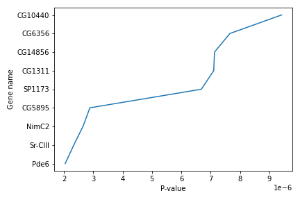
We use Jupyter Notebook and so running the cell generates the figure directly below the code. The figure is also included in the Notebook document for future viewing. However, other Python environments like an interactive Python session started from a terminal or a Python script executed via the command line require an additional command to display the figure.
Instruct matplotlib to show a figure:
plt.show()
This command can also be used within a Notebook - for instance, to display multiple figures if several are created by a single cell.
If you want to save and download the image to your local machine, you can use the plt.savefig() command with the name of the file (png, pdf etc) as the argument. The file is saved in the Jupyter Notebook session and then you can download it. For example:
plt.tight_layout()
plt.savefig('foo.png')
plt.tight_layout() is used to make sure that no part of the image is cut off during saving.
When using dataframes, data is often generated and plotted to screen in one line, and plt.savefig() seems not to be a possible approach. One possibility to save the figure to file is then to save a reference to the current figure in a local variable (with plt.gcf()) and then call the savefig class method from that variable. For example, the previous plot:
subset = data.iloc[121:, :]
x = subset['P-value']
y = subset['Gene name']
fig = plt.gcf()
plt.plot(x, y)
fig.savefig('my_figure.png')
More about plots
You can use the plot() method directly on a dataframe. You can plot multiple lines in the same plot. Just specify more columns in the x or y axis argument. For example:
new_subset = data.iloc[0:10, :]
new_subset.loc[:, ['P-value', 'P-adj']].plot()
plt.xticks(range(0,len(new_subset.index)), new_subset['Gene name'], rotation=60)
plt.xlabel('Gene name')
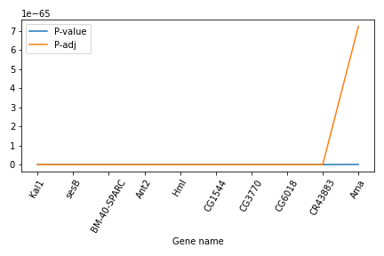
In this example, we select a new subset of the dataset, but plot only the two columns P-value and P-adj. Then we use the plt.xticks() method to change the text and the rotation of the x axis.
Another useful plot type is the barplot. In the following example we plot the number of genes that belong to the different chromosomes of the dataset.
bar_data = data.groupby('Chromosome').size()
bar_data.plot(kind='bar')
plt.xticks(rotation=60)
plt.ylabel('N')
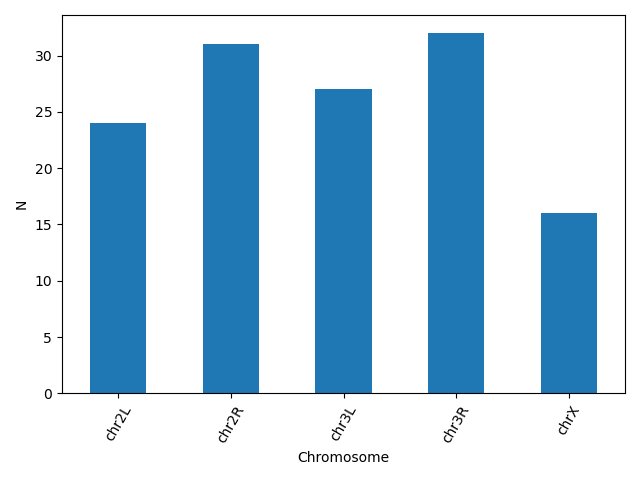
matplotlib supports also different plot styles from ather popular plotting libraries such as ggplot and seaborn. For example, the previous plot in ggplot style.
plt.style.use('ggplot')
bar_data = data.groupby('Chromosome').size()
bar_data.plot(kind='bar')
plt.xticks(rotation=60)
plt.ylabel('N')
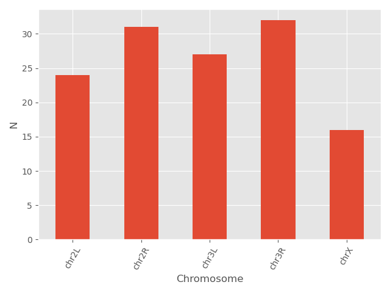
You can also change different parameters and customize the plot.
plt.style.use('default')
bar_data = data.groupby('Chromosome').size()
bar_data.plot(kind='bar', color = 'red', edgecolor = 'black')
plt.xticks(rotation=60)
plt.ylabel('N')
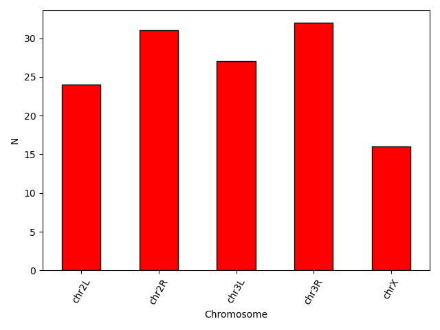
Another useful type of plot is a scatter plot. In the following example we plot the Base mean of a subset of genes.
scatter_data = data[['Base mean', 'Gene name']].head(n = 15)
plt.scatter(scatter_data['Gene name'], scatter_data['Base mean'])
plt.xticks(rotation = 60)
plt.ylabel('Base mean')
plt.xlabel('Gene name')
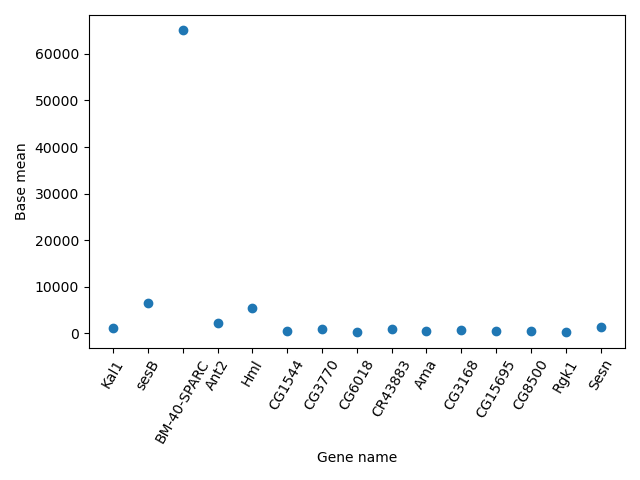
Exercise
- Using the same dataset, create a scatterplot of the average P-value for every chromosome for the “+” and the “-“ strand.
Solution
-
First find the data and save it in a new dataframe. Then create the scatterplot. You can even go one step further and assign different colors for the different strands.Note the use of the
mapmethod that assigns the different colors using a dictionary as an input.exercise_data = data.groupby(['Chromosome', 'Strand']).agg(mean_pvalue = ('P-value', 'mean')).reset_index() colors = {'+':'red', '-':'blue'} plt.scatter(x = exercise_data['Chromosome'], y = exercise_data['mean_pvalue'], c = exercise_data['Strand'].map(colors)) plt.ylabel('Average P-value') plt.xlabel('Chromosome')
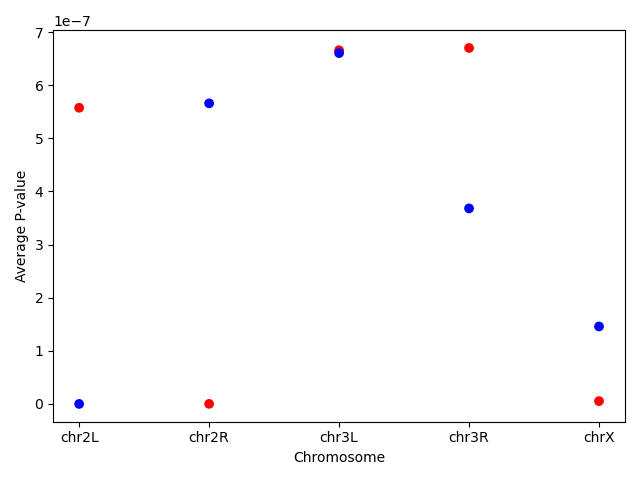
Making your plots accessible
Whenever you are generating plots to go into a paper or a presentation, there are a few things you can do to make sure that everyone can understand your plots.
Always make sure your text is large enough to read. Use the fontsize parameter in xlabel, ylabel, title, and legend, and tick_params with labelsize to increase the text size of the numbers on your axes.
Similarly, you should make your graph elements easy to see. Use s to increase the size of your scatterplot markers and linewidth to increase the sizes of your plot lines.
Using color (and nothing else) to distinguish between different plot elements will make your plots unreadable to anyone who is colorblind, or who happens to have a black-and-white office printer. For lines, the linestyle parameter lets you use different types of lines. For scatterplots, marker lets you change the shape of your points.
Programming style
A consistent coding style helps others (including our future selves) read and understand code more easily. Code is read much more often than it is written, and as the Zen of Python states, “Readability counts”. Python proposed a standard style through one of its first Python Enhancement Proposals (PEP), PEP8.
Some points worth highlighting:
- document your code and ensure that assumptions, internal algorithms, expected inputs, expected outputs, etc., are clear
- use clear, semantically meaningful variable names
- use white-space, not tabs, to indent lines (tabs can cause problems across different text editors, operating systems, and version control systems)
Python community
Python supports a large and diverse community across academia and industry.
- The Python 3 documentation covers the core language and the standard library.
- PyCon is the largest annual conference for the Python community.
- SciPy is a rich collection of scientific utilities. It is also the name of a series of annual conferences.
- Jupyter is the home of Project Jupyter.
- Pandas is the home of the Pandas data library.
- Stack Overflow’s general Python section can be helpful, as well as the sections on NumPy, SciPy, and Pandas.
Closing JupyterLab
- Click User: Active Interactive Tools
- Tick the box of your Jupyter Interactive Tool, and click Stop
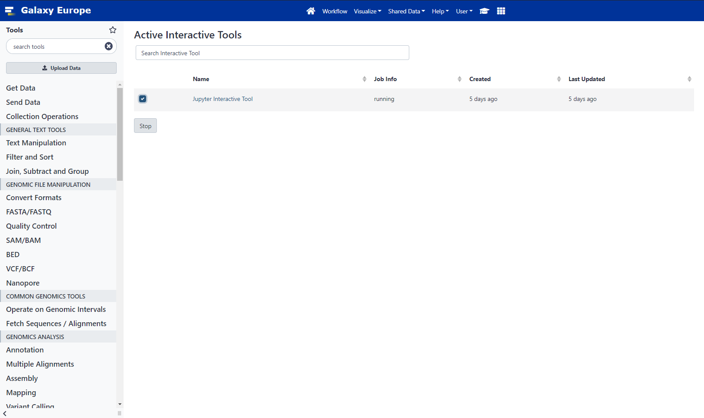
If you want to run this notebook again, or share it with others, it now exists in your history.
Conclusion
This tutorial aims to serve as an introduction to the Python programming language.
Key points
-
Python is a fairly easy programming language to learn and use, but be mindful of the indexing.
-
Python has many libraries offering a variety of capabilities, which makes it popular for beginners, as well as, more experienced users
-
You can use scientific libraries like Numpy, Pandas and Matplotlib to perform data analysis.
References
- Wendi Bacon, Mehmet Tekman, 2021, Trajectory Analysis using Python (Jupyter Notebook) in Galaxy (Galaxy Training Materials). https://training.galaxyproject.org/training-material/topics/transcriptomics/tutorials/scrna-JUPYTER-trajectories/tutorial.html Online; accessed Wed Sep 01 2021
- Batut et al., 2018, Community-Driven Data Analysis Training for Biology Cell Systems [10.1016/j.cels.2018.05.012
- Azalee Bostroem, Trevor Bekolay, and Valentina Staneva (eds): “Software Carpentry: Programming with Python.” Version 2016.06, June 2016, https://github.com/swcarpentry/python-novice-inflammation, 10.5281/zenodo.57492.
- Allen Lee, Nathan Moore, Sourav Singh, Olav Vahtras (eds). Software Carpentry: Plotting and Programming in Python. http://github.com/swcarpentry/python-novice-plotting, 2018.
- Chaitanya Singh, Introduction to Python Programming language, BeginnersBook. https://beginnersbook.com/2018/01/introduction-to-python-programming/ Online; accessed Wed Sep 01 2021
- Python 3.9.7 Documentation, https://docs.python.org/3/tutorial/datastructures.html Online; accessed Wed Sep 01 2021
- Karlijn Willems, Pandas Tutorial: DataFrames in Python. https://www.datacamp.com/community/tutorials/pandas-tutorial-dataframe-python Online; accessed Wed Sep 01 2021
- Bérénice Batut, Mallory Freeberg, Mo Heydarian, Anika Erxleben, Pavankumar Videm, Clemens Blank, Maria Doyle, Nicola Soranzo, Peter van Heusden, 2021 Reference-based RNA-Seq data analysis (Galaxy Training Materials). https://training.galaxyproject.org/training-material/topics/transcriptomics/tutorials/ref-based/tutorial.html Online; accessed Wed Sep 01 2021
- Bérénice Batut, Fotis E. Psomopoulos, Toby Hodges, 2021 Advanced R in Galaxy (Galaxy Training Materials). https://training.galaxyproject.org/training-material/topics/introduction/tutorials/r-advanced/tutorial.html Online; accessed Wed Sep 01 2021
Key points
Frequently Asked Questions
Have questions about this tutorial? Check out the FAQ page for the Introduction to Galaxy Analyses topic to see if your question is listed there. If not, please ask your question on the GTN Gitter Channel or the Galaxy Help ForumFeedback
Did you use this material as an instructor? Feel free to give us feedback on how it went.

Citing this Tutorial
- Maria Christina Maniou, Fotis E. Psomopoulos, 2021 Introduction to Python (Galaxy Training Materials). https://training.galaxyproject.org/training-material/topics/introduction/tutorials/python-basics/tutorial.html Online; accessed TODAY
- Batut et al., 2018 Community-Driven Data Analysis Training for Biology Cell Systems 10.1016/j.cels.2018.05.012
details BibTeX
@misc{introduction-python-basics, author = "Maria Christina Maniou and Fotis E. Psomopoulos", title = "Introduction to Python (Galaxy Training Materials)", year = "2021", month = "09", day = "08" url = "\url{https://training.galaxyproject.org/training-material/topics/introduction/tutorials/python-basics/tutorial.html}", note = "[Online; accessed TODAY]" } @article{Batut_2018, doi = {10.1016/j.cels.2018.05.012}, url = {https://doi.org/10.1016%2Fj.cels.2018.05.012}, year = 2018, month = {jun}, publisher = {Elsevier {BV}}, volume = {6}, number = {6}, pages = {752--758.e1}, author = {B{\'{e}}r{\'{e}}nice Batut and Saskia Hiltemann and Andrea Bagnacani and Dannon Baker and Vivek Bhardwaj and Clemens Blank and Anthony Bretaudeau and Loraine Brillet-Gu{\'{e}}guen and Martin {\v{C}}ech and John Chilton and Dave Clements and Olivia Doppelt-Azeroual and Anika Erxleben and Mallory Ann Freeberg and Simon Gladman and Youri Hoogstrate and Hans-Rudolf Hotz and Torsten Houwaart and Pratik Jagtap and Delphine Larivi{\`{e}}re and Gildas Le Corguill{\'{e}} and Thomas Manke and Fabien Mareuil and Fidel Ram{\'{\i}}rez and Devon Ryan and Florian Christoph Sigloch and Nicola Soranzo and Joachim Wolff and Pavankumar Videm and Markus Wolfien and Aisanjiang Wubuli and Dilmurat Yusuf and James Taylor and Rolf Backofen and Anton Nekrutenko and Björn Grüning}, title = {Community-Driven Data Analysis Training for Biology}, journal = {Cell Systems} }
Congratulations on successfully completing this tutorial!
Do you want to extend your knowledge? Follow one of our recommended follow-up trainings: